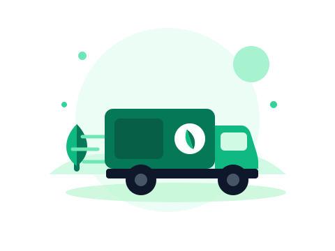
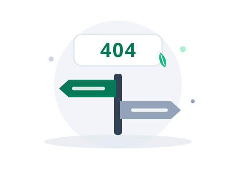

Aset Visual
Set ilustrasi spot bergaya flat-geometris dalam palet brand — untuk layar login, status kosong, memuat, galat, sukses, dan offline. Semua disusun dari bentuk dasar agar ringan, konsisten, dan mudah dipakai ulang sebagai .svg.
Layar Utama


Status
Sistem & Akses

Dalam Konteks
Mulai dengan menambahkan kendaraan pertama untuk hari transaksi ini.
Perubahan akan disinkronkan otomatis saat koneksi kembali.
Palet: emerald (#047857 · #10b981 · #a7f3d0) + slate netral, aksen amber hanya untuk galat/peringatan. Pakai pada area ≥ 160px; di bawah itu gunakan ikon. Sertakan selalu teks pendamping — ilustrasi memperkuat, bukan menggantikan pesan.